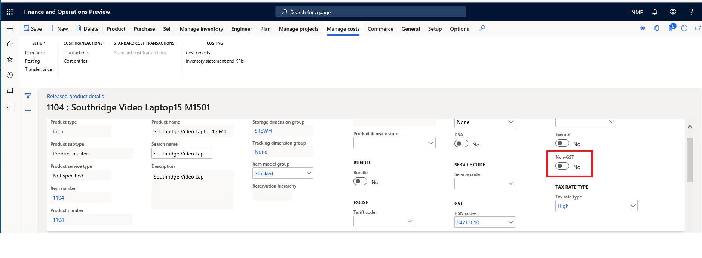

What's new or changed for India GST in 10.0.01 (April 2019)
This topic includes a summary of the new features and critical bug fixes released in Dynamics 365 Finance version 10.0.01 for India GST localization.
New configuration
The following configurations are available from the Shared Asset Library in LCS for use in version 10.0.1:
- GSTReturns.version.14.xml
- GST Returns model mapping.version.14.5.xml
- GSTR1CSV.version.14.28.xml
- GSTR2CSV.version.14.32.xml
The following GSTR issues are also resolved:
- Total item discount amount is not showing in GSTR.
- Item unit of measurement should show both unit and its description, and for service item, it should be Nos.
- No customer billing name for stock transfer in GSTR.
Non-GST item
You can create a non-GST item that is the default for Tax information in taxable transactions.

Critical fixes
- Can't post a purchase invoice for a service item with load in inventory.
- The HSN summary is empty and there are no records in B2CL(Supply to Large customer >INR 2,50,000) in GST offline tool format.
- Total transaction value in GSTR1/GSTR2 does not equal the invoice amount when a transaction price includes tax.
- Editing a request for quotation (RFQ) reply results in the following error, "Posting exception has been thrown by the target of an invocation”.
- Amount origin of withholding tax is incorrect.
- Unable to save a purchase order after changing a financial dimension. The following error occurs, "Function MarkupTrans.parmSourceDocLineTypeEnumName has been incorrectly called".
- Posting a sales invoice can result in the error, "Voucher xxx is already used as of date”.
- After changing the tax formula, the condition is updated with the same content as the formula.
- Invoice date is incorrect in GSTR1/GSTR2.
- Can't create a project invoice proposal for the on-account journal when the journal includes withholding tax with the error, "Object reference not set to an instance of an object".
- The Tax journal with a tax component of IGST and the posting type as Tax Payable is posted with SGST and CGST with zero amount.
- The Tax transaction inquiry page allows only 11 fields to be selected.
- GSTR2 takes the bill of entry posting date instead of the posting date for the import order.
- Can't open a tax document when the GST configuration is extended with the error, "Object reference not set an instance of an object".
- After edit formula/condition, the condition of other nodes shows the same value string.
- Auto-block importing of previous Microsoft Dynamics AX (AX2012) configuration versions to Dynamics 365 Finance.
- GSTR configuration for two companies cannot be set up.
- Can't add multiple tax measures with the same name.
- Retail statement posting fails during sales invoice posting when there is price include tax sales order with a service item, and the tax is different from the tax in the head quarter.
Upcoming fixes in 10.0.2
- Fixed exchange rate is not considered in GSTR1.
- Unable to view the tax information for a timesheet in Indian legal entity.
- GSTIN of e-commerce operator is always blank in GSTR1.
- Place of supply is incorrect in GSTR2.
- Project expense can't be posted when there is a sales tax group and an item sales tax group.